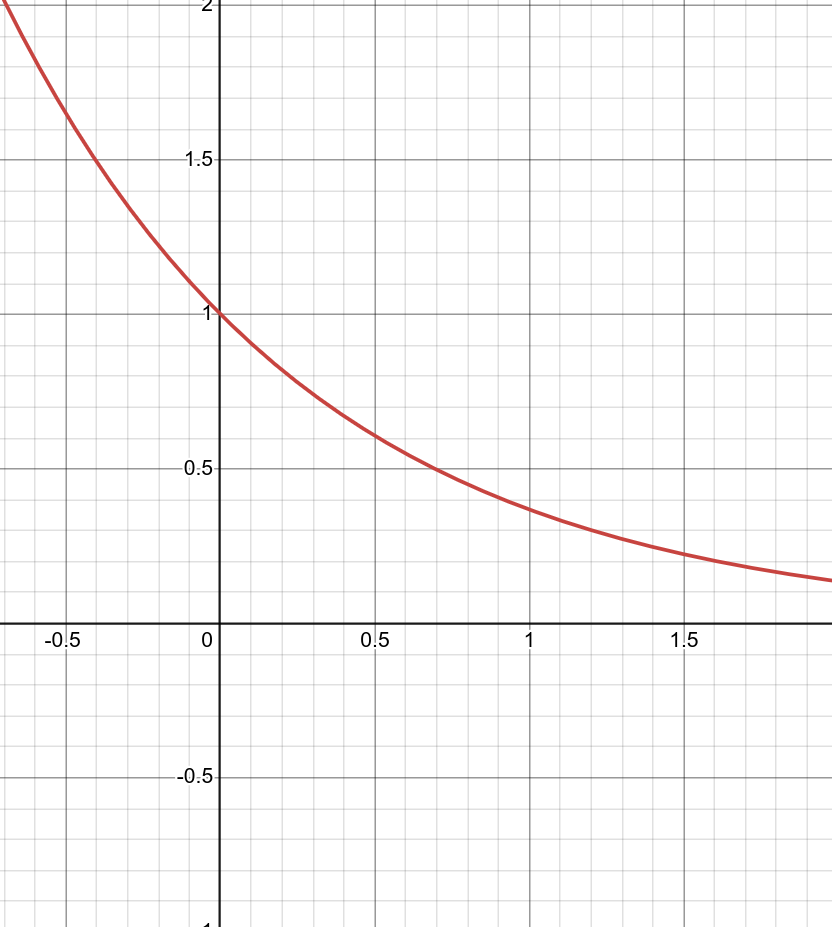
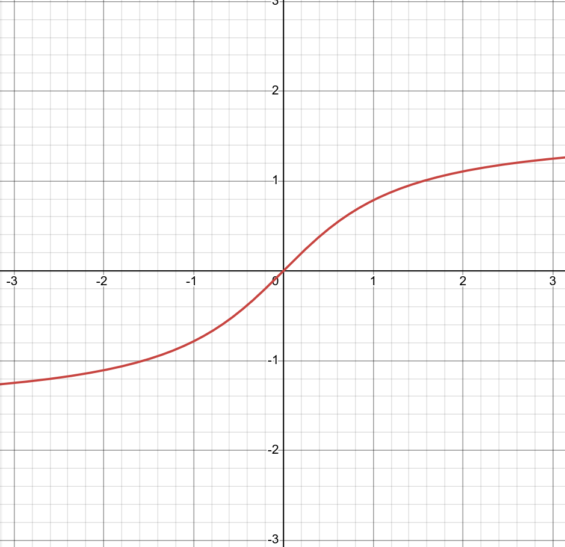

保证笔记由人类生成，由ds勘误
不保证笔者回看可以看懂（雾
此篇笔记是机器学习数学基础系列第1篇笔记，共有12篇笔记，将会不断更新，主要用作复习，防止我的记性过于好以至于忘记。
0 函数
非常基础了，高一甚至初中的东西，放出来只是为了补全内容
0.1 函数的定义
量和量之间的关系，如$A=\pi r^2$。
常见的表现形式：$y=f(x)$，$y=\phi(x)$等。
函数在$x_0$处取得的函数值：$y_0=y|_{x=x_0}=f(x_0)$。
0.2 几种函数
0.2.1 分段函数
$$
f(x) =
\begin{cases}
\sqrt{x}, & x \ge 0 \\[4pt]
-x, & x < 0
\end{cases}
$$
在不同范围的定义域内函数有不同的对应关系，分成几段，故称分段函数。
0.2.2 反函数
$$h(t)=\frac{1}{2}gt^2 \quad\Rightarrow\quad t(h)=\sqrt{\frac{2h}{g}}$$
将自变量和因变量的位置颠倒形成的函数，称为反函数。
0.2.3 显函数和隐函数
显函数：可显式看出对应关系的函数，如$y=x^2+1$
隐函数：不能显式看出对应关系的函数，如$F(x,y)=0 \ , \ 3x+y-4=0$
0.3函数的几种特性
0.3.1 奇偶性
偶函数：
满足$f(-x)=f(x)$
沿$y$轴对称
例：$$f(x)=x^2 \Rightarrow f(-x)=(-x)^2=x^2=f(x)$$
奇函数：
满足$f(-x)=-f(x)$
沿原点对称
例：
$$f(x)=x^3 \Rightarrow f(-x)=(-x)^3=-x^3=-f(x)$$
0.3.2 周期性
$$f(x+T) = f(x)$$
理解：函数有一定周期规律，不断重复每个周期内的变化，称其有周期性
0.3.3 单调性
单调递增：假设有一增函数$f(x)$，假设$x_1>x_2$，则$f(x_1) > f(x_2)$
单调不减：假设有一单调不减函数$g(x)$，假设$x_1 > x_2$,则$g(x_1) \ge g(x_2)$
单调递减：假设有一减函数$h(x)$，假设$x_1>x_2$，则$h(x_1) < h(x_2)$
单调不增：假设有一单调不增函数$l(x)$，假设$x_1>x_2$，则$l(x_1) \le l(x_2)$
1 极限
1.1 数列
1.1.1 定义
按照一定次数排列的一列数：$u_1,u_2,…,u_n,…$，其中$u_n$叫做通项
1.1.2 性质
对于数列${u_n}$，如果当$n$无限增大，其通项无限接近于一个常数$A$，则称该数列以$A$为极限或称数列收敛于$A$，否则称数列为发散。
$$
\lim_{n \to \infty} u_n = A,或u_n \to A (n \to \infty)
$$
其他例子：
$$
\lim_{n \to \infty} \frac{1}{3^n} = 0 \\
\\
\lim_{n \to \infty} \frac{n}{n+1} = 1 \\
\\
\lim_{n \to \infty} 2^n 不存在（发散）
$$
1.2 极限
1.2.1 符号表示
$x \to \infty$表示“当$|x|$无限增大时”
$x \to +\infty$表示“当$x$无限增大时”
$x \to -\infty$表示“当$x$无限减少时”
$x \to x_0$表示“当$x$从$x_0$的左右两侧无限接近于$x_0$时”
$x \to x_0^+$表示“当$x$从$x_0$的右侧无限接近于$x_0$时”
$x \to x_0^-$表示“当$x$从$x_0$的左侧无限接近于$x_0$时”
1.2.2 图像&示例
$$\lim_{x \to +\infty} e^{-x}=0$$

$$\lim_{x \to \infty} \frac{1}{x} = 0$$

$$\lim_{x \to -\infty} \arctan x=-\frac{\pi}{2}$$

1.2.3 相关定义
函数在$x_0$的邻域内有定义，$\lim_{x \to x_0}f(x)=A$，或$f(x) \to A(x \to x_0)$
$$\lim_{x \to 1}\frac{x^2-1}{x-1}=\lim_{x \to 1} \frac{(x-1)(x+1)}{x-1}=2$$
1.2.4 左右极限
右半邻域 $(x_0,\ x_0+\delta)$；左半邻域 $(x_0-\delta,\ x_0)$。函数在这些邻域内有定义时，才能谈对应一侧的极限。
$$
\lim_{x \to x_0^+} f(x) = A,或f(x) \to A(x \to x_0^+)或f(x_0+0)=A\\
\lim_{x \to x_0^-} f(x) = A,或f(x) \to A(x \to x_0^-)或f(x_0-0)=A
$$
1.2.5 性质
$$\lim_{x \to x_0} f(x)=A的充要条件是\lim_{x \to x_0^-}f(x)=\lim_{x \to x_0^+} f(x)=A$$
反例：
$$f(x)=\begin{cases} x-1 &x<0, \\ 0 &x=0, \\ x+1 &x>0 \end{cases} $$
当$x \to 0$时$f(x)$的极限
解：
$$\lim_{x \to 0^+} f(x) = \lim_{x \to 0^+}(x+1)=1$$
$$\lim_{x \to 0^-} f(x) = \lim_{x \to 0^-}(x-1)=-1$$
$$左右极限存在但不相等，$$
$$\therefore \lim_{x \to 0}f(x)不存在$$
2 无穷小与无穷大
2.1 无穷小
2.1.1 定义
以零为极限
$$\lim_{x \to \infty} \frac{1}{x}=0,则\frac{1}{x}是x \to \infty 时的无穷小。$$
$$\lim_{x \to 2} (3x-6)=0,则3x-6是x \to 2时的无穷小。$$
2.1.2 性质
- 有限个无穷小的代数和仍是无穷小
- 有限个无穷小的积仍是无穷小。
- 有界变量与无穷小的积仍是无穷小。
- 无穷个无穷小之和不一定是无穷小。例：
$$
\lim_{n \to \infty} (\frac{1}{n^2}+\frac{2}{n^2}+…+\frac{n}{n^2})\\
=\lim_{n \to \infty} \frac{\frac{n(n+1)}{2}}{n^2}\\
=\lim_{n \to \infty} \frac{n+1}{2n}\\
=\frac{1}{2}
$$ - 无穷小的商不一定是无穷小。例：
$$\lim_{x \to \infty} \frac{x}{2x} = \frac{1}{2},\quad \lim_{x \to 0} \frac{x^2}{2x}=0,\quad \lim_{x \to 0^+} \frac{2x}{x^2} = +\infty$$（左极限为 $-\infty$，故 $x\to0$ 时该商的极限不存在）
2.1.3 极限和无穷小的关系
$$\lim_{x \to x_0}f(x)=A的充要条件f(x)=A+\alpha(x),其中\alpha(x)是x \to x_0 的无穷小$$
2.1.4 无穷小的比较
$$\alpha=\alpha(x),\beta=\beta(x)都是无穷小$$
$$\lim_{x \to x_0}\alpha(x) = 0,\lim_{x \to x_0} \beta(x)=0$$
如果$\lim_{x \to x_0}{\frac{\beta}{\alpha}}=0$，则称$\beta$是比$\alpha$高阶无穷小。
如果$\lim_{x \to x_0}{\frac{\beta}{\alpha}}=\infty$，则称$\beta$是比$\alpha$低阶无穷小。
如果$\lim_{x \to x_0}{\frac{\beta}{\alpha}}=C \not = 0$，则称$\beta$是$\alpha$同阶无穷小。
2.2 无穷大
2.2.1 定义
不是一个很大的数，是相对于变换过程而言
$$\lim_{x \to x_0}f(x)=\infty \quad\text{或}\quad f(x) \to \infty(x \to x_0)$$
2.2.2 无穷小和无穷大的关系
在自变量的变换的同一过程中，如果$f(x)$为无穷大，那么$\frac{1}{f(x)}$为无穷小。
3 连续性与导数
3.1 函数的连续性
3.1.1 定义
设函数$y=f(x)$在点$x_0$的某邻域内有定义，如果当自变量的改变量$\Delta x$趋近于零时，相应函数的改变量$\Delta y$也趋近于零，则称$y=f(x)$在点$x_0$处连续。
$$
\lim_{\Delta x \to 0}\Delta y=\lim_{\Delta x \to 0}[f(x_0+\Delta x)-f(x_0)]=0
$$
3.1.2条件
函数$f(x)$在点$x_0$处连续，需要满足的条件：
- 函数在该点处有定义
- 函数在该点处极限$\lim_{x \to x_0}f(x)$存在
- 极限值等于函数值$f(x_0)$
例：
$$函数f(x) = \begin{cases}x+1 &x \le 0, \\ \frac{\sin x}{x} &x > 0 \end{cases}在x=0处的连续性？$$
$$
f(0)=1 \\
\lim_{x \to 0^-}f(x)=\lim_{x \to 0^-}(x+1)=1 \ \ \ \lim_{x \to 0}f(x)=1 \\
\lim_{x \to 0^+}f(x)=\lim_{x \to 0^+}\frac{\sin x}{x}=1 \ \ \ \lim_{x \to 0}f(x)=f(0)=1
$$
3.2 函数的间断点
3.2.1 定义
函数$f(x)$在点$x=x_0$处不连续，则称其为函数的间断点。
3.2.2 条件
- 函数$f(x)$在点$x_0$处没有定义
- 极限$\lim_{x \to x_0} f(x)$不存在
- 函数在该点有定义、极限也存在，但 $\lim_{x \to x_0} f(x) \neq f(x_0)$
3.2.3 性质
- 当$x \to x_0$时，$f(x)$的左右极限存在，则称$x_0$为$f(x)$的第一类间断点，否则为第二类间断点。
- 跳跃间断点：$\lim_{x \to x_0^-}f(x)$ 与 $\lim_{x \to x_0^+}f(x)$ 均存在，但不相等
- 可去间断点：$\lim_{x \to x_0}f(x)$ 存在，但不等于 $f(x_0)$（或该点无定义）
例子：
$$函数f(x)=\frac{x^2-1}{x^2-3x+2}的连续性？$$
$$
在点x=2,x=1处没有定义 \\ \\
\lim_{x \to 1^-}\frac{x^2-1}{x^2-3x+2}=\lim_{x \to 1^-}\frac{x+1}{x-2}=-2 \\ \\
\lim_{x \to 1^+}\frac{x^2-1}{x^2-3x+2}=\lim_{x \to 1^+}\frac{x+1}{x-2}=-2 \\ \\
\therefore 在x=1处是可去间断点 \\ \\
\lim_{x \to 2^-}f(x)=-\infty,\ \ \ \lim_{x \to 2^+}f(x)=+\infty \\ \\
在x=2是第二类间断点
$$
3.3 导数
3.3.1 定义
如果平均变化率的极限存在，$$\lim_{\Delta x \to 0}\frac{\Delta y}{\Delta x}=\lim_{\Delta x \to 0} \frac{f(x_0+\Delta x)-f(x_0)}{\Delta x}$$
则称此极限为函数$y=f(x)$在点$x_0$处的导数，$f’(x_0)$
$$y’|{x=x_0}$，$\frac{\mathrm{d}y}{\mathrm{d}x}\big|{x=x_0}$ 或 $\frac{\mathrm{d}f(x)}{\mathrm{d}x}\big|_{x=x_0}$$
3.3.2 基本导数公式
$$
\begin{aligned}
&©’=0 &&(x^{\mu})‘=\mu x^{\mu-1}\\
&(\sin x)’=\cos x &&(\cos x)‘=-\sin x\\
&(\tan x)’=\sec^2 x &&(\cot x)‘=-\csc^2 x\\
&(\sec x)’=\sec x\tan x &&(\csc x)‘=-\csc x\cot x\\
&(a^x)’=a^x\ln a &&(e^x)‘=e^x\\
&(\log_a x)’=\frac{1}{x\ln a} &&(\ln x)‘=\frac{1}{x}\\
&(\arcsin x)’=\frac{1}{\sqrt{1-x^2}} &&(\arccos x)‘=-\frac{1}{\sqrt{1-x^2}}\\
&(\arctan x)’=\frac{1}{1+x^2} &&(\operatorname{arccot} x)'=-\frac{1}{1+x^2}
\end{aligned}
$$
3.3.3 求导法则
$$
\begin{aligned}
&(u\pm v)‘=u’\pm v’\\
&(uv)‘=u’v+uv’\\
&\left(\frac{u}{v}\right)‘=\frac{u’v-uv’}{v^2}\qquad(v\neq0)\\
&(Cu)‘=Cu’\\
&\left(\frac{C}{v}\right)‘=-\frac{Cv’}{v^2}\qquad(C\text{ 为常数})\\
&[f(g(x))]‘=f’(g(x)),g’(x)\qquad\text{（链式法则）}\end{aligned}
$$
链式法则是反向传播的全部依据：复合函数的导数等于外层导数 × 内层导数，多层网络就是一层层乘下去。
4 偏导数
4.0 引入
- 对于一元函数$y=f(x)$只存在$y$随$x$的变化
- 二元函数$z=f(x,y)存在z随x变化的变化率，随y变化的变化率，随x,y同时变化的变化率$
4.1 定义
设函数$z=f(x,y)在点(x_0,y_0)的某个邻域内有定义y=y_0，一元函数f(x,y_0)在点x=x_0处可导，即极限\lim_{\Delta x \to 0}\frac{f(x_0+\Delta x,y_0)-f(x_0,y_0)}{\Delta x}=A$
则称$A为函数：z=f(x,y)在点(x_0,y_0)处关于自变量x的偏导数记作：f_x(x_0,y_0)或者$$$\frac{\partial z}{\partial x}|{x=x_0 \\ y=y_0}\\ \\
\frac{\partial f}{\partial x}|{x=x_0 \\ y=y_0} \\ \\
z_x|_{x=x_0 \\ y=y_0}
$$
4.2几何意义
对 $x$ 求偏导：
$$\frac{\partial f}{\partial x}\bigg|{\substack{x=x_0\\ y=y_0}}
=\frac{\mathrm{d}}{\mathrm{d}x}f(x,y_0)\bigg|{x=x_0}$$
它是曲面 $z=f(x,y)$ 与平面 $y=y_0$ 的交线在 $M_0$ 处的切线 $M_0T_x$，对 $x$ 轴的斜率。
对 $y$ 求偏导同理：
$$\frac{\partial f}{\partial y}\bigg|{\substack{x=x_0\\ y=y_0}}
=\frac{\mathrm{d}}{\mathrm{d}y}f(x_0,y)\bigg|{y=y_0}$$
它是曲面与平面 $x=x_0$ 的交线在 $M_0$ 处的切线 $M_0T_y$，对 $y$ 轴的斜率。

例子：
$$
求f(x,y)=x^2+3xy+y^2在点(1,2)处的偏导数。\\ \\
f_x(x,y)=2x+3y \\ \\
f_y(x,y)=3x+2y \\ \\
f_x(1,2)=(2x+3y)|{x=1 \\ y=2}=8 \\ \\
f_y(1,2)=(3x+2y)|{x=1 \\ y=2}=7
$$
5 方向导数
5.0 引入
$$
函数：z=f(x,y) \\ \\
|PP’|=\rho =\sqrt{(\Delta x)^2+(\Delta y)^2} \\ \\
\Delta z=f(x+\Delta x,y+\Delta y)-f(x,y)
$$
5.1 定义
如果函数的增量，与这两点距离的比例存在，则称此为在P点沿着L的方向导数$$\frac{\partial f}{\partial l}=\lim_{\rho \to 0}\frac{f(x+\Delta x,y+\Delta y)-f(x,y)}{\rho}$$
函数：$$f(x,y)在X轴正向\vec{e_1}={1,0},Y轴正向\vec{e_2}={0,1}的方向导数分别为：f_x,f_y，负方向导数为 $-f_x$、$-f_y$$$
5.2 定理
如果函数$z=f(x,y)在点P(x,y)是可微分的，那么在该点沿任意方向L的方向导数都存在。$
$$
\frac{\partial f}{\partial l}=\frac{\partial f}{\partial x}\cos \phi +\frac{\partial f}{\partial y}\sin \phi
$$
$\phi为X轴到L的角度$
例子：
$$
求函数z=xe^{2y}在点P(1,0)处沿从点P(1,0)到点Q(2,-1)的方向的方向导数
$$
$$
解：这里方向\vec{l}即为\overrightarrow{PQ}={1,-1}, \\ \\
故x轴到方向\vec{l}的转角\phi=-\frac{\pi}{4}. \\ \\
\because \frac{\partial z}{\partial x}|{(1,0)}=e^{2y}|{(1,0)}=1; \\ \\
\frac{\partial z}{\partial y}\Big|{(1,0)}=2xe^{2y}\Big|{(1,0)}=2, \\ \\
所求方向导数\\ \\
\frac{\partial z}{\partial l}=\cos(-\frac{\pi}{4})+2\sin(-\frac{\pi}{4})=-\frac{\sqrt 2}{2}
$$
6 梯度
6.1 定义
函数：$z=f(x,y)$ 在平面区域内具有连续的一阶偏导数，对于其中每一个点 $P(x,y)$ 都有向量
$$
\frac{\partial f}{\partial x}\vec{\boldsymbol{i}}
+\frac{\partial f}{\partial y}\vec{\boldsymbol{j}}
$$
则其称为函数在点 $P$ 的梯度。
$$
\operatorname{grad} f(x,y)
=\frac{\partial f}{\partial x}\vec{\boldsymbol{i}}
+\frac{\partial f}{\partial y}\vec{\boldsymbol{j}}
$$
$\vec{e}=\cos\varphi,\vec{\boldsymbol{i}}+\sin\varphi,\vec{\boldsymbol{j}}$ 是方向 $L$ 上的单位向量：
$$
\begin{aligned}
\frac{\partial f}{\partial l}
&=\frac{\partial f}{\partial x}\cos\varphi
+\frac{\partial f}{\partial y}\sin\varphi \\[4pt]
&=\left{\frac{\partial f}{\partial x},\frac{\partial f}{\partial y}\right}
\cdot{\cos\varphi,\sin\varphi} \\[4pt]
&=\operatorname{grad} f(x,y)\cdot\vec{e}
=\left|\operatorname{grad} f(x,y)\right|\cos\theta,
\qquad \theta=\left(\operatorname{grad} f(x,y),\vec{e}\right)
\end{aligned}
$$
6.2 性质
- 只有当 $\cos!\left(\operatorname{grad} f(x,y),\vec{e}\right)=1$，$\dfrac{\partial f}{\partial l}$ 才有最大值。
- 函数在某点的梯度是一个向量，它的方向与方向导数最大值取得的方向一致；其大小正好是最大的方向导数。
- 梯度为等值线（等高线）上的法向量。
例子：
设 $u=xyz+z^{2}+5$，求 $\operatorname{grad} u$，并求在点 $M(0,1,-1)$ 处方向导数的最大（小）值。
$$
\because\quad
\frac{\partial u}{\partial x}=yz,\qquad
\frac{\partial u}{\partial y}=xz,\qquad
\frac{\partial u}{\partial z}=xy+2z,
$$
$$
\begin{aligned}
\therefore\quad
\operatorname{grad} u\Big|{(0,1,-1)}
&=\left.(yz,\ xz,\ xy+2z)\right|{(0,1,-1)} \\[4pt]
&=(-1,\ 0,\ -2)
\end{aligned}
$$
$$
\text{从而}\qquad
\max\left{\left.\frac{\partial u}{\partial l}\right|_{M}\right}
=\left|\operatorname{grad} u\right|=\sqrt{5}
$$
$$
\min\left{\left.\frac{\partial u}{\partial l}\right|_{M}\right}
=-\left|\operatorname{grad} u\right|=-\sqrt{5}
$$
如果您喜欢此博客或发现它对您有用，则欢迎对此发表评论。 也欢迎您共享此博客，以便更多人可以参与。 如果博客中使用的图像侵犯了您的版权，请与作者联系以将其删除。 谢谢 ！